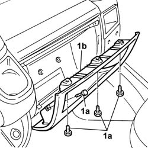
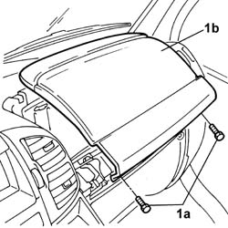
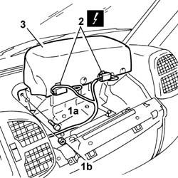

5580C22 AIR BAG MODULE PASSANGER SIDE R R
- Path
- Procedures > 55 ELECTRICAL EQUIPMENT > 5580 SPECIAL ACCESSORIES > 5580C AIR BAG SYSTEM > 5580C22 AIR BAG MODULE PASSANGER SIDE R R
- Kind
- repair procedure (removal / refitting; the operation number is the code)
- Applies to
- all engines; all production periods
- Interactive page
- https://sloeber94.github.io/elrnDB-fDct/en/#/244001406
Applies to: all engines; all production periods
Applies to: all engines; all production periods
 Removing
Removing
 Refitting
Refitting1. Undo the fixing bolts (1a) and remove the oddments pocket (1b).

Applies to: all engines; all production periods
1. Undo the fixing bolts (1a) and remove the Air Bag module protective cover (1b).

Applies to: all engines; all production periods
1. Undo the fixing bolts (1a) and nuts (1b) and move the Air Bag module aside.
2. Disconnect the electrical connections.
3. Remove the Air Bag module.

Applies to: all engines; all production periods
- Place the Air Bag module in the special cupboard, resting it on a free surface with the bag facing upwards.
Applies to: all engines; all production periods
Refitting
Removing- Observe the following precaution.
- If a new module is being fitted, position the labels. Remove the detachable part of the adhesive label from the new module and place it in the special folder containing the vehicle details (model, registration date, chassis number) and the serial number of the old module. The file should be kept for future checks. A new adhesive plate comes together with the module and should be stuck on top of the existing one. Beforehand, however, it should be perforated at the month and 10 years after the year in which the module is being fitted (e.g. 2010 for 2000).
- Partly fit the Air Bag module.
- Connect the electrical connections.
- Place the Air Bag module in position and tighten the fixing nuts and bolts.
- Fit the Air Bag module protective cover and tighten the fixing bolts.
- Fit the oddments compartment housing.
- Connect the negative battery terminal.
- Fit the battery protective cover.
- Check the operation of the system using the Examiner or other diagnostic equipment.